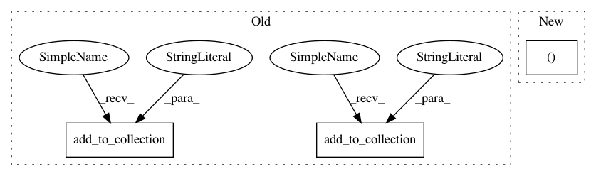

2ba7725df0cbc3183d9cdc49f797614d24c9f80e,detector/detector.py,,metrics,#Any#Any#,130
Before Change
// TODO: Doesn"t make much sense over training data, averaging with initial
// (bad) predictions.
auc, update_auc_op = tf.metrics.auc(labels, logits, curve="PR")
tf.add_to_collection("metric_ops", update_auc_op)
tf.add_to_collection("metrics", auc)
tf.summary.scalar("auc", auc)
def loss(logits, labels):
After Change
)
tf.summary.scalar(f"iauc/{cls}", auc)
auc, _ = tf.metrics.auc(
labels, normalized_logits,
curve="PR", name="auc",
metrics_collections="metrics",
In pattern: SUPERPATTERN
Frequency: 3
Non-data size: 3
Instances
Project Name: tryolabs/luminoth
Commit Name: 2ba7725df0cbc3183d9cdc49f797614d24c9f80e
Time: 2017-02-23
Author: agustin@tryolabs.com
File Name: detector/detector.py
Class Name:
Method Name: metrics
Project Name: tryolabs/luminoth
Commit Name: 2ba7725df0cbc3183d9cdc49f797614d24c9f80e
Time: 2017-02-23
Author: agustin@tryolabs.com
File Name: detector/detector.py
Class Name:
Method Name: metrics
Project Name: googledatalab/pydatalab
Commit Name: 15a86d278c6b0f8574cdd6e237f778faf2e002e1
Time: 2017-02-27
Author: qimingj@users.noreply.github.com
File Name: solutionbox/inception/datalab_solutions/inception/_model.py
Class Name: Model
Method Name: build_prediction_graph
Project Name: GoogleCloudPlatform/cloudml-samples
Commit Name: 01ed847eea06300d278ffcf1214021b487d3d463
Time: 2017-03-07
Author: elibixby@google.com
File Name: flowers/trainer/model.py
Class Name: Model
Method Name: build_prediction_graph